Artificial turf
T-1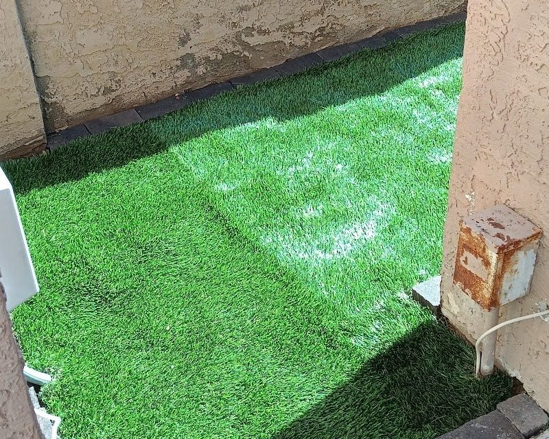
Synthetic grass laid over a compacted base, held at the edges by a paver border. Good for side yards and play areas where real grass struggles in the heat.
Sheet L-0 Site plan · Phoenix, AZ 85006
Artificial turf, paver patios and fire pits, decorative rock and yard clean-ups for Phoenix homes, by Miklo Landscaping.
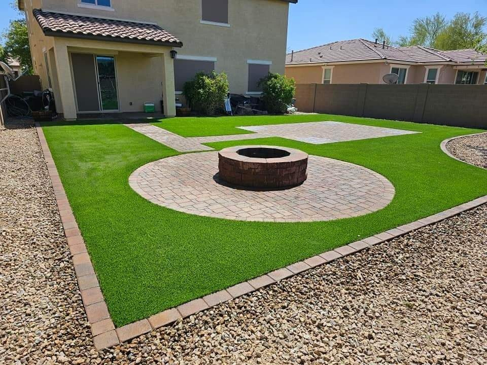
L-1Details
Every plan is built from a few details. These are the four in Miklo Landscaping’s own photos: what each one is, how it goes together, and when you need it.

Synthetic grass laid over a compacted base, held at the edges by a paver border. Good for side yards and play areas where real grass struggles in the heat.
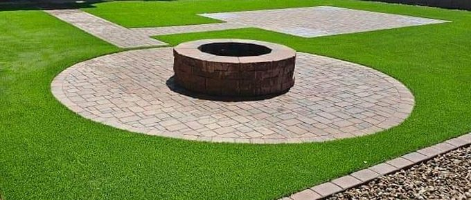
Concrete pavers laid as circles, pads, walks and borders, with a raised fire-pit ring as the centrepiece. You need it when you want a solid, level place to sit outside.
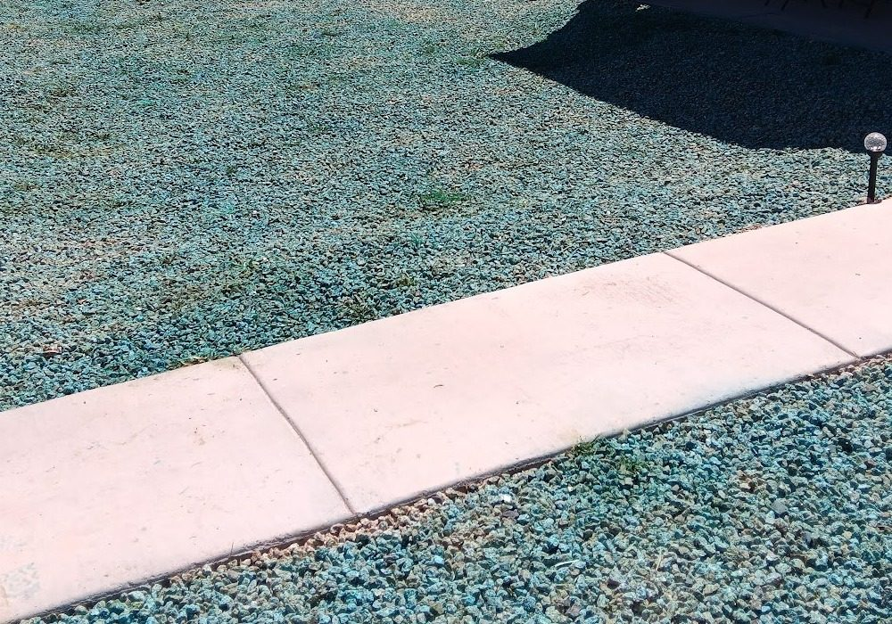
A layer of landscape rock spread over bare ground and raked even up to walks and fences. It stops dust and mud, and it needs no water at all.
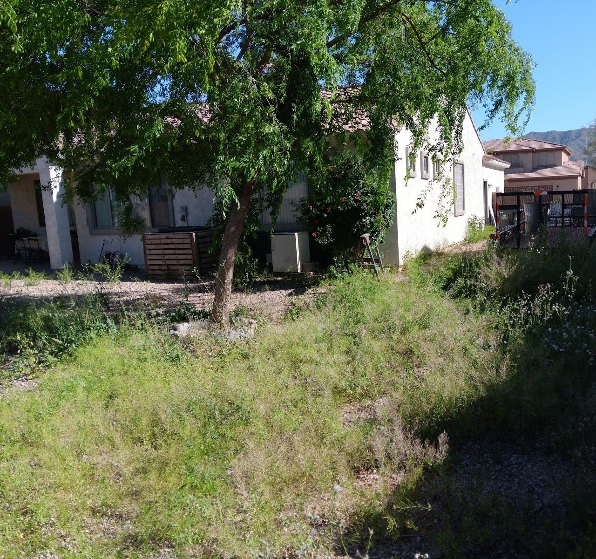
Clearing weeds, overgrowth and debris so the ground is bare and workable again. It is the first step before any new turf, rock or pavers go in.
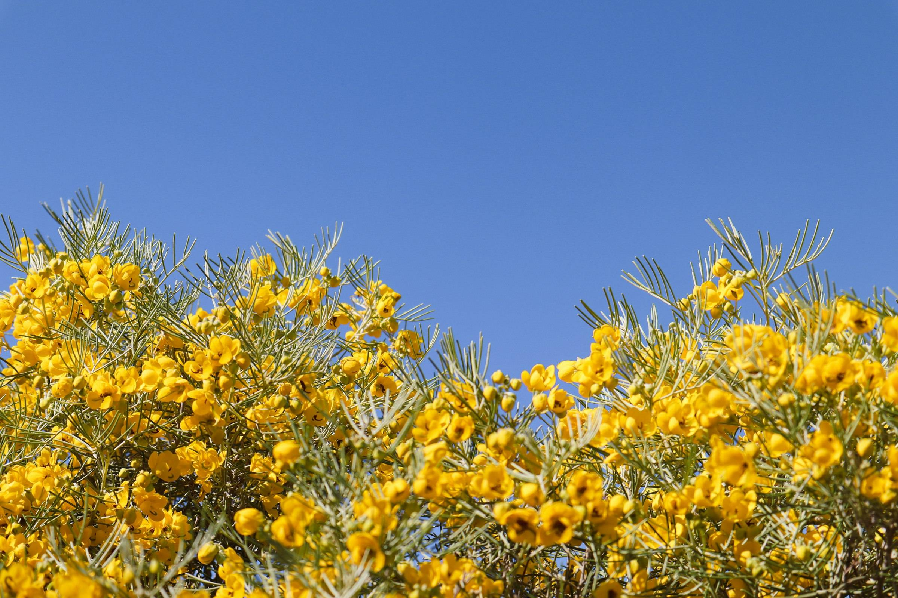
PV · Parkinsonia
Arizona’s state tree turns yellow every spring. It is the first symbol on most Phoenix planting plans, and the first one on the schedule below.
Illustrative stock photo: Allison Astorga / Unsplash
L-2Plant schedule
A general guide to low-water plants that suit Phoenix yards. Tap a symbol on the plan or a row in the schedule to read it.
Note PV
Arizona’s state tree: green bark, a flood of yellow flowers in spring and light, filtered shade. Give it room to spread over a patio or bed.
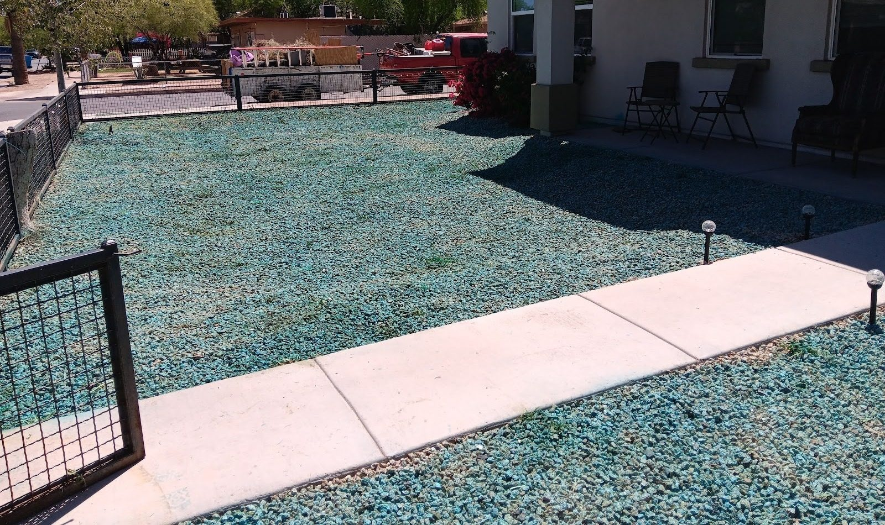
L-3Site photos
More of the business’s own photos, pinned to the sheet: a turf side yard from above, the paver edge that holds it, and the weedy edge of a yard before work. Tap one to see it full size.
Text a photo of your yard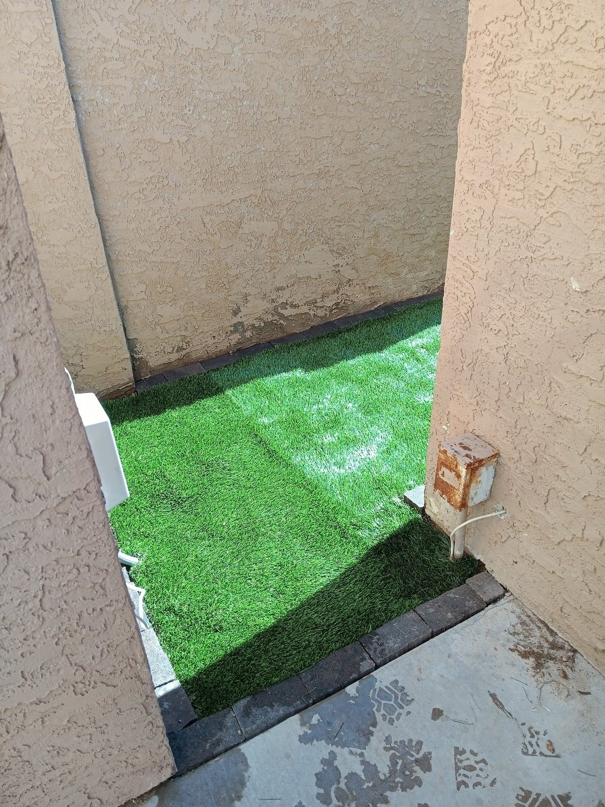
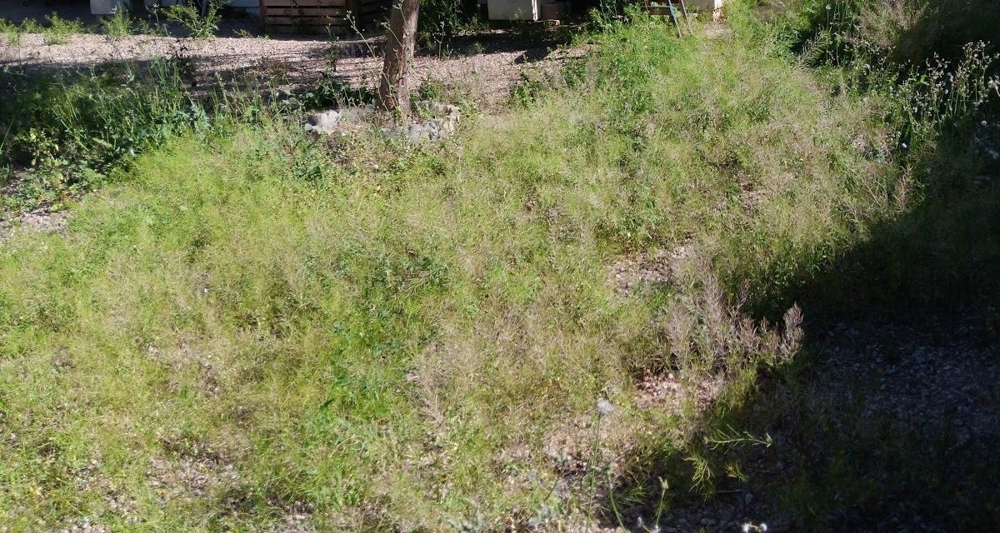
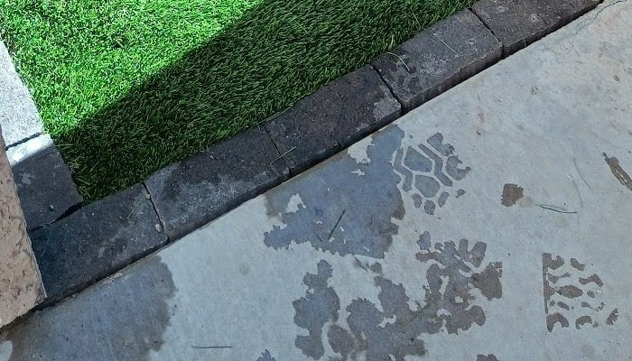
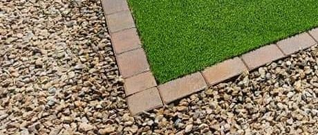